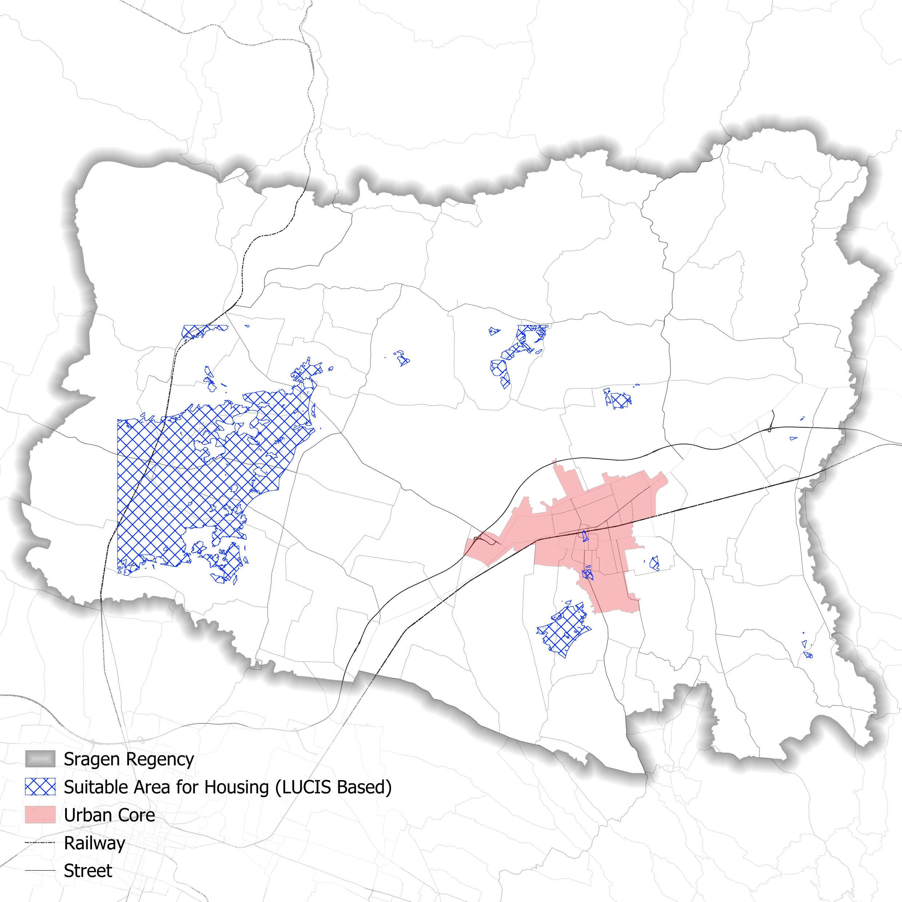
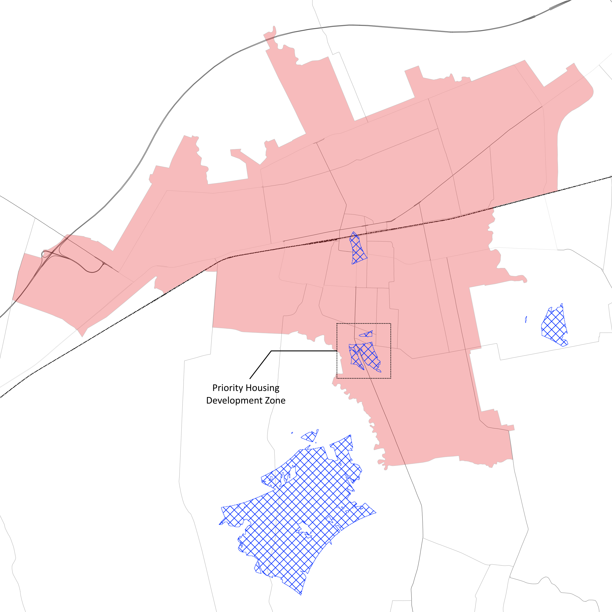
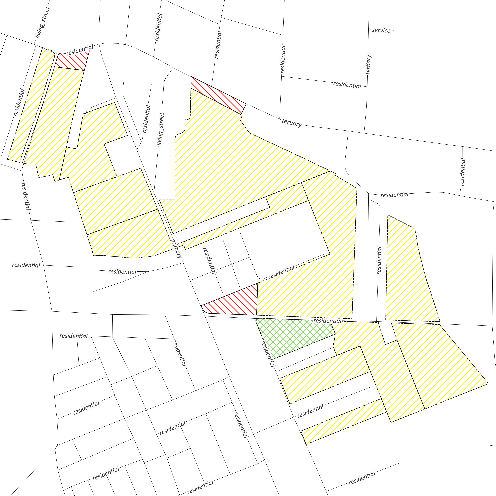
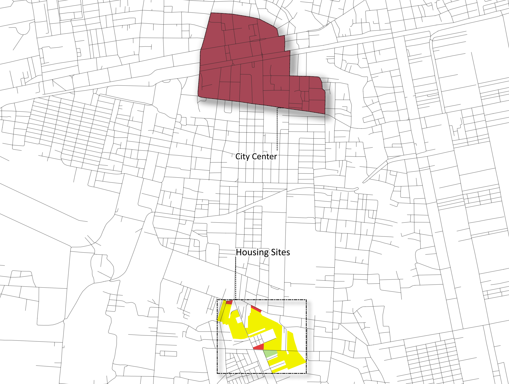

Optimal Housing Landscape in Sragen
A LUCIS-Based Suitability Analysis for Identifying Optimal Housing Sites
Abstract
This study applies the Land Use Conflict Identification Strategy (LUCIS) to identify land in Sragen Regency that is simultaneously safe, accessible, and functionally integrated into the urban system. Rather than treating vacant land as inherently developable, the analysis frames housing-site selection as a spatial decision arising from the interaction of environmental capacity, human accessibility, and land-use conflict awareness. The procedure isolates a priority development zone of approximately ±11 hectares at the southern edge of the Sragen urban core, evaluates its institutional legitimacy against the Detailed Spatial Plan (RDTR), refines it to a buildable parcel structure, and allocates the result across housing, shophouse, and green-space functions. The findings demonstrate that suitability is strongest where environmental feasibility, functional integration, and regulatory legitimacy align.
1. Problem Statement: Housing Land Is Not Simply Vacant Land
In Sragen, the challenge is not to locate just any available parcel, but to identify land that is simultaneously safe, accessible, and functionally integrated into the urban system. Some land appears empty but is environmentally constrained. Other land is accessible but already tied to competing urban functions. Suitability, therefore, is not a visual guess; it is a spatial decision.

2. Conceptual Framework: LUCIS Reads Land as a Layered Construct
The Land Use Conflict Identification Strategy bridges physical and human geography, enabling space to be read not as a singular surface but as a synthesis of environmental constraints and socio-economic dynamics. The framework rests on three analytical dimensions:
| Dimension | Definition |
|---|---|
| Environmental capacity | Suitability depends on terrain, hazard exposure, and the physical ability of land to support settlement safely. |
| Human accessibility | Road access, educational facilities, health services, and the surrounding urban structure shape whether land can support daily life. |
| Conflict awareness | LUCIS identifies not only what is suitable, but what may compete with or contradict other land-use priorities. |
3. Emergence of a Priority Zone
Through the LUCIS approach, the analysis demonstrates that suitability is not merely a matter of physical geography, but the outcome of an encounter between environmental and human systems. From this process, a selected area of approximately ±11 hectares emerges in the southern part of the Sragen urban core. It stands out not because it is isolated, but because it is spatially feasible and already connected to the broader city.
At this scale, the analytical question shifts from "where land is suitable" to "why this part of the city is the most coherent place for growth."

4. Institutional Legitimacy: Suitability Reinforced by the RDTR
The selected area is reinforced by the RDTR* of Sragen Regency 2021–2041. The site falls largely within a High-Density Residential Zone, while portions overlap with a City-Scale Commercial and Service Zone.
This overlap creates mixed-use opportunity, but also introduces institutional conditions. Development within the commercial and service zone is permitted conditionally, requiring stakeholder approval as well as environmental and traffic impact assessment.
Planning, in this sense, is not just spatial allocation. It is a negotiation between land, regulation, and future urban aspiration.

* RDTR = Rencana Detail Tata Ruang (Detailed Spatial Plan).
5. Intra-Zone Refinement: Suitability Is Not Uniform
At parcel scale, the analysis filters out fragmented edges, constrained pieces, and less coherent fragments. What remains is a buildable structure with enough continuity to support planned development. This is where LUCIS becomes practical: it moves from broad opportunity mapping to direct design and planning guidance.

6. Functional Allocation: The Selected Land Is Not Purely Residential
The division into housing, shophouse area, and green space reflects an intentional effort to construct a living environment that is functional, socially responsive, and ecologically balanced.
| Function | Area | Description |
|---|---|---|
| Housing development area | 102,757 m² | Allocated across 13 parcels as the dominant and structuring program. |
| Shophouse development area | 4,421 m² | Distributed across 3 parcels as an economic interface between daily life and urban movement. |
| Green space | 4,033 m² | Reserved as one integrated parcel for environmental balance and social use. |
7. Spatial Structure: Strength in Connection Rather Than Isolation
In terms of spatial structure, the site demonstrates a strong relationship with the surrounding urban fabric. Its proximity to the city center allows it to function as an extension rather than an enclave.
Road infrastructure supports internal access and external integration, while the surrounding residential and service areas reinforce its role in the broader urban system. This is a compact and connected configuration, aligned with contemporary planning principles of proximity and accessibility.

8. Locational Position: Near Enough to Matter, Far Enough to Grow
The selected site occupies a transitional position relative to the activity center of Sragen. It is not peripheral, but neither is it over-constrained by the urban core. This makes it particularly suitable for housing expansion. Its location allows the area to support everyday accessibility while still accommodating a meaningful development footprint.

9. Conclusion
The city does not grow where land exists. It grows where conditions align.
Through LUCIS, this project identifies land that is not simply available, but appropriate: environmentally feasible, functionally integrated, and institutionally legitimate. In Sragen, housing suitability emerges as a balance between safety and accessibility, between environmental capacity and urban life.